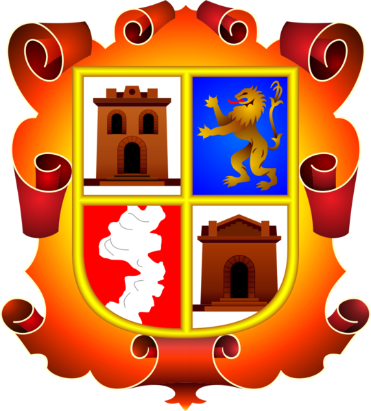

<footer class="footer" id="footer">
    <div class="container-fluid text-white mt-5">
        
        <div class="row py-3">
            <div class="col-md mt-2 fs-6  text-center">
                <h4 class="text-white"><strong>CONTACTO:</strong></h4>
                <p>
                    JR. Ricardo Palma N° 441 – Plaza de armas<br>
                    Andahuaylas – Apurímac – Perú<br>
                    RUC: 20156959783
                </p>
            </div>
            <div class="col-md mt-2 text-center">
                <a class="navbar-brand text-white fs-6" href="#">
                    935780655
                </a>
                <a class="navbar-brand text-white fs-6" href="#">
                    <i class="material-icons">facebook</i> FACEBOOK
                </a>
                <div class="text-center mt-4 fs-6">Copyright © 2021 STC | Disign by LERI</div>
            </div>
            <div class="col-md mt-2 fs-6 ">
                <div>
                      Municipalidad Provincial de Andahuaylas
                </div>
                <div class="text-justify-content mt-3">
                    <p>La provincia de Andahuaylas, que integra la Región Apurímac, es cuna de la cultura Chanka, cuya historia está ligada a la Nación Inca, con quienes sostuvieron una prolongada guerra, y una colosal batalla.</p>
                </div>
            </div>
        </div>
    </div>
</footer>

